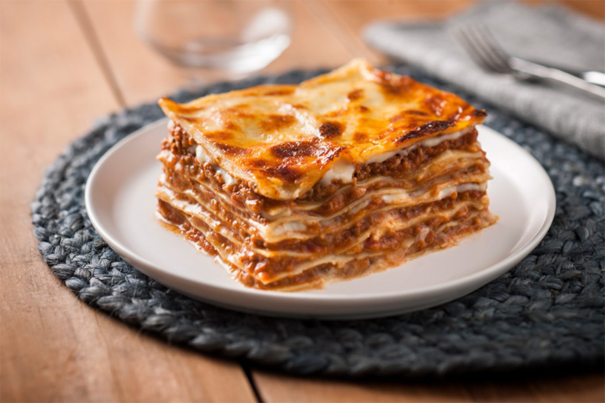

Lasagna

Very Dairy Lasanga Recipe
This lasagna is very milky. It is make with the milk of at least 3 cows and each cow should reside from a different climate.
The term used by locals to rate it's milk content is "ooky-gooky-ness'.
Ingredients
- Milk 1
- Milk 2
- Milk 3
- Cheese
- A big tomato
- Wheat
Steps
- Mix Milks 1 and 3 until frothy
- Pour that into Milk 2
- Lid and shake container containing all milk until it yelps
- Roll the big tomato (one) in a pile of wheat
- Dunk tomato into yelping milks and enjoy!